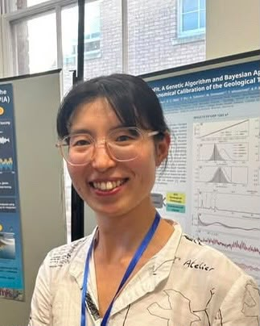

Yujing Wu

Quantitative Geoscientist
I combine geoscience with quantitative analysis and computational methods to investigate deep-time Earth system evolution and astronomical forcing.
CV · Google Scholar · ResearchGate · ORCID
Biography
I am a quantitative geoscientist working at the intersection of geology, astronomy, and data science. I am currently a postdoctoral researcher at Paris Observatory, France. My research uses geological records, time-series analysis, probabilistic methods, and large-scale datasets to investigate deep-time Earth system evolution and astronomical forcing. My work has progressed from global zircon geochronology and long-term Earth system patterns to cyclostratigraphy, Earth–Moon evolution, and geological constraints on planetary orbital solutions.
Current Research
Astronomical Time Scales from Geological Records
My current research uses AstroGeoFit to reconstruct astronomical time scales from geological records by extracting orbital signals and optimizing age–depth relationships, with broader applications to evaluating deep-time astronomical solutions.
Earth–Moon Evolution from Deep-Time Records
I reconstruct the Earth’s axial precession frequency, lunar distance, length of day, and tidal dissipation from geological records to better constrain the long-term evolution of the Earth–Moon system.
Research Interests
- Quantitative Geoscience
- Astrochronology / Cyclostratigraphy / Paleoclimatology
- Geochronology / Geochemistry / Geochronology database
Academic and Research Positions
-
Postdoctoral Researcher (Mar 2024 – Present)
LTE, CNRS, Paris Observatory – PSL, France -
Staff Associate II (Part-Time) (May 2022 – Sep 2023)
Lamont-Doherty Earth Observatory, Columbia University, USA
Education
-
Ph.D. in Structural Geology (Sep 2019 – Jan 2024)
Peking University, China -
B.Sc. in Geochemistry (Sep 2015 – Jul 2019)
Peking University, China -
B.Ec. in Economics (Sep 2016 – Jul 2019)
Peking University, China